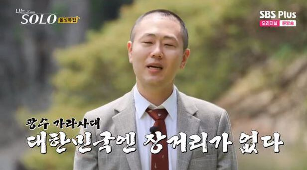

What you won't do for love
•◦❥◦•
대문호 셰익스피어는 말했다.
사랑은 미친 짓이다.
나라는 우주에 갑자기 너라는 태양이 탄생하는 것,
그래서 내가 우주인 줄도 잊고
너를 중심으로 행성처럼 빙빙 돌게 되는 것 ⋯.
실제로 사랑에 빠진 뇌는 일정 기능을 상실한다.
대뇌의 가장 많은 부분을 차지하는 전두엽이 있기에 사람은 ‘생각’할 수 있다.
그러나 사랑에 빠진 뇌는 전두엽의 활동을 멈춘다.
즉, 사랑을 하면 판단하지 않는다. 오로지 ‘격정’에만 휩쓸리게 되는 것이다.
동시에 편도체도 활동을 중지한다.
편도체는 공포 반응에 많은 역할을 하는데, 위협적인 상황을 맞닥뜨렸을 때
유기체로 하여금 싸우거나, 혹은 도망가게 만든다.
원숭이의 뇌를 다룬 실험에서, 편도체가 손상된 원숭이는
어떤 것도 두려워하지 않게 되었다.
그래서 어떤 것도 두려워하지 않게 되고, 판단하지 않고,
‘사랑에 미친’
나는 뭔 짓을 했냐고?
헤어진 애인의 ‘너 없이 못 살겠다.’는 카톡에 💬
11,738.4km 를 날아갔다. 🛫
가장 빨리 출발하는 한국행 티켓을 예매한 후에는 미 친 듯 이
1시간 거리의 공항으로 달렸다.
코로나 시절이었기 때문에, 가랑이 찢어져라 달려야 마지막 PCR 검사를
받을 수 있었다. 아니면 티켓이 종이 쪼가리가 될 판이었다.
검사소 폐장 시간을 10여 분 남기고, 무사히 도착했으나
하필 내 앞에 단체 여행객이 줄지어 있었다.
혹여나 내 눈 앞에서 순서가 끊겨버리면 어쩌나,
가족이라도 팔아야겠다는 생각을 그 때 처음 해봤다.
무사히 코를 쑤시고 제발 음성이 나오기를 빌었다.
비싼 티켓, 가장 비싼 속성 PCR 검사가 물거품이 되지 않아야만 했다.
하늘은 내 편이었다.
놀란 가슴을 진정시키고 집으로 돌아와서 가족도 팔았다.
‘교수님, 가족 일로 한국에 다녀와야할 것 같아요.’
뭐 완전 틀린 말은 아니라고 생각한다..
하나 신기했던 점은 마치 짠 것처럼
그 때가 마침 독일 생활 중 가장 긴 공휴일 주간이었다는 것.
(교수님, 저 날라리 아니에요..)
그렇게 내가 머무르던 도시에서 프랑크푸르트 공항까지 1시간,
프랑크푸르트에서 헬싱키 공항까지 2시간 반,
그리고 또 다시 2시간 반의 기다림 후에
인천 공항으로 11시간 30분을 날아서 . . .
출발할 때는 새벽 6시였는데,
그이를 다시 만났을 때에는
다음 날 오후 12시가 되어있었다.
17시간 30분만에 또 코를 쑤셔야했다.
8개월만에 만나는 씨버러버 (cyber lover) 들은
눈 앞의 서로가 3D라는 것에 신기해하고 기뻐했다.
…
눈 감는 것도 아까운 달콤한 시간들이 지나가고,
이제는 코로나 규제가 약해졌으니 다음에는 그가 독일로 오기를 기약하며.
나는 다시 돌아갔다.
이번에는 20시간을 날아서, 에티하드 항공을 타고
여자들 중 나만 히잡을 쓰지 않은 나라를 경유하며..
...
그리고 독일에 도착하자마자 수업 갔다.
(지독한 한국인)

사랑은 미친 짓이다. 시작하는 순간부터, 끝나는 순간까지.
그리고 알고도 다시 하게 되는 미친 짓이다.
『하지만 사랑은 달나라에 가는 것이다.
달나라에 영원히 살 수는 없지만, 그 곳에 남긴 발자국은 영원한 것처럼… 』
- 전경린, <엄마의 집> 인용
당신이 하지 않았을 어떤 미친 짓, 사랑을 위해 해보시기를.
한 번 잃어버리고 나면, 어떤 미친 짓을 해도
사랑은 쉬이 돌아오지 않기 때문에.
♬
I came back to let you know
Got a thing for you and I can’t let go
Some people go around the world for love
But they may never find what they dream of
What you won’t do, do for love
You tried everything but you don’t give up
In my world, only you make me do for love
what I would not do . . .
♪
…
…
…
